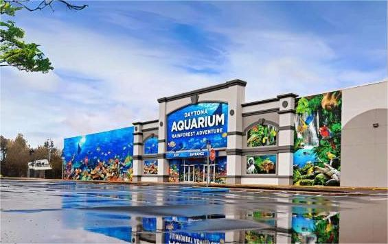
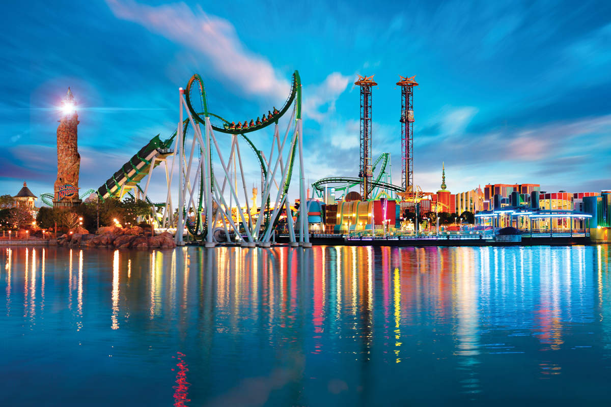
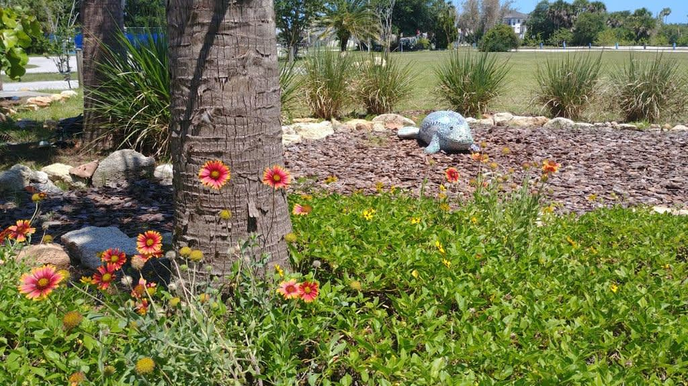

Welcome
Florida's Panhandle is renowned for outdoor adventure, family fun, and its stunningly white beaches. Stretching from Pensacola to Apalachicola, it promises history, charm, a multitude of activities, and an abundance of smiles.
Top Attractions
- Daytona Aquarium & Rainforest Adventure 
- Universal's Islands of Adventure 
- Marine Discovery Center 
Famous Local Food
The Sunshine State has a dizzying array of places to eat and drink. Here's where to find fish shacks, food festivals, key lime pies, farm-to-table restaurants, wineries, breweries, and food tours. Florida dining? We'll drink to that!
Contact Information
For more information, visit: Florida Official Website
Email: info@florida-tourism.ph